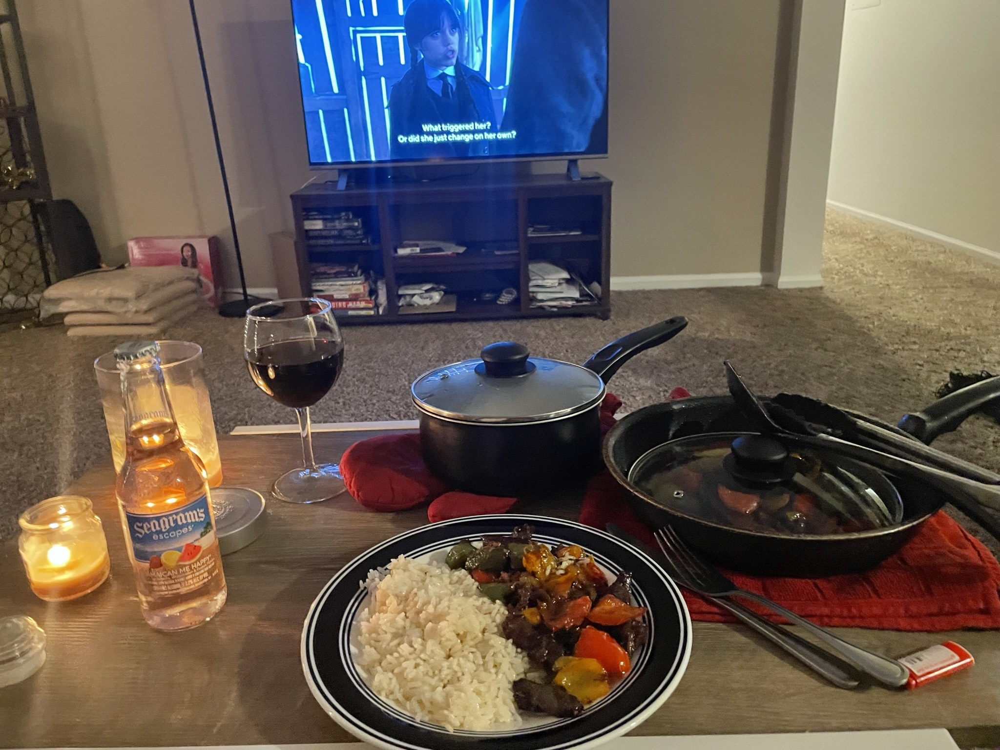
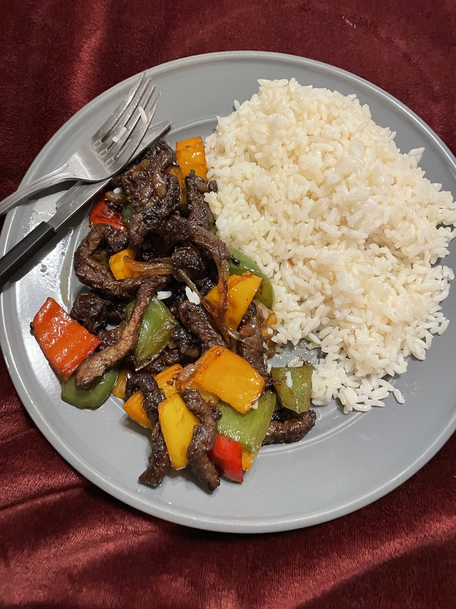

Beef Stirfry


Step by step recipe
Discription here
Ingredients
- 3 different color Bell peppers(optional)
- Sirloin Steak beef
- Onions
- Rice(Basmati rice if possible)/Noodles
- Vegetable Oil/Olive Oil
- Soy Sauce
- Sesame Sauce
- CornStarch
- Salt and Pepper
- Garlic poweder(optional)
- Onion Powder(Optional)
- Chopped Garlic
Steps
- Place steak in the freezer for 30 miniuites to make it firm. In the meantime, slice the onions thinly. Cut up the bell peppers
- Cut steak meat into strips and put into a bowl. Season with salt, black pepper, onion powder, garlic powder and mix. Then add cornstarch and soy sauce and mix. If you have time, let it sit in the fridge for 30 mins to 2 hours to marinate.
- In the meantime, boil rice following package instructions
- Heat pan on high heat and add oil. Once the oil heats up, add 2 tbs of chopped garlic. Then add meat and cook on high heat constantly tossing and adding some soy sauce as you go for abour 5-7 minuites. Add sesame oil 30 seconds before taking off heat. once done, transfer onto a dish
- Using the same pan,fry the vegetables. Add a few drops of oil and once pan is heated on high heat, add the onions and Bell peppers. Season with Salt and Pepper and if you want, add onion powder and Garlic Powder. Add a tsp of soy sauce and Cook for about 5 minuites or until done
- Right before taking the Veggies off the heat, add the cooked beef into the pan and mix with the veggies
- Done! Serve with rice or noodles